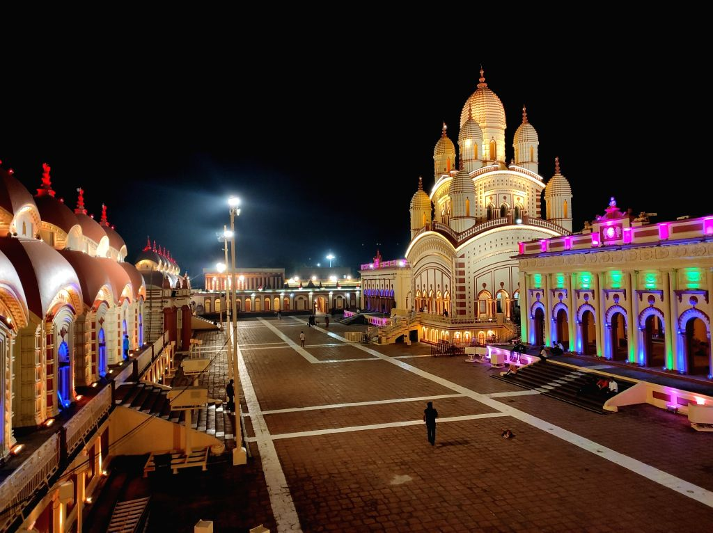

West Bengal is an Indian state which lies in
the eastern region of India. It is the fourth-most populous state
of India, having over 91 million citizens. The state has
a rural population of about 60%,
and most of its villagers live in small hamlets.

* Dakshineswar Kali Temple : Dakshineswar Kali Temple
is a Hindu navaratna temple in Dakshineswar, Kolkata, West Bengal,
India. Situated on the eastern bank of the Hooghly River,
the presiding deity of the temple is Bhavatarini,
a form of Parashakti Adya Kali, otherwise known as Adishakti Kalika.
most languages used : Bengali , Hindi, Santali, Urdu , Nepali
* Darjeeling: Nestled in the Himalayan foothills,
Darjeeling is a famous hill station known for its tea gardens,
scenic beauty, and the Darjeeling Himalayan Railway .
Additional Place in West Bengal
* Sundarbans : The Sundarbans is the
largest mangrove forest in the world and a UNESCO World
Heritage Site.
* Digha: A popular seaside resort town,
Digha is known for its beautiful beaches and serene atmosphere
* Shantiniketan:Founded by Rabindranath Tagore,
Shantiniketan is a cultural and educational hub
piyush chaubey :- for hiring or about me click the link :-
Piyush portfolio
prashant dwivedi :- for hiring or about me click the link :-
Prashant portfolio